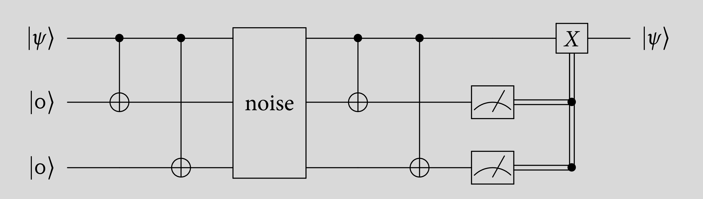

Using CQCMix¶
The cqc.pythonLib.CQCMix() Context Manager class can be used to create CQC programs of type MIX (i.e. 11). All instructions inside the CQCMix context are shipped in one package, thereby incurring less travel time due to latency between the application and the SimulaQron backend than an equivalent program which doesn’t use CQCMix. This page provides an example program which performs a syndrome measurement and a recovery following the protocol of the bit flip error correction code.
More examples can be found in the test file: tests/test_cases_cqcconnection/cqc_mix.py.
The protocol¶
The bit flip code is an error correction code which ensures that a qubit can be recovered in its original state after noise potentially damaged it, provided two ancillary qubits are used and the noise only applies 0 or 1 bit flips (i.e. X gate) to any of the three qubits. The following is a circuit representation of the bit flip code.
The example of the CQCMix provided here only deals with the syndrome measurement and recovery. These are all steps after noise in the circuit above.
This is a pseudocode description of the syndrome measurement and recovery step:
CNOT(control = qubit_1, target = qubit_2)
measure(qubit_2)
if measurement yielded 1
CNOT(control = qubit_1, target = qubit_3)
measure(qubit_3)
if measurement yielded 1
X(qubit_1)
Note that the pseudocode applies a slight optimization: it only measures the second ancillary qubit if the first yielded 1. Because the two ancillary qubits will both yield 1 if and only if the designated qubit has been damaged by the noise, the syndrome measurement has already concluded if one of the two ancillary qubits does not yield 1. This optomization saves execution time in architectures were CNOT gates have a relatively great gate execution time, as is the case in the NV center architecture.
The program using CQCMix¶
This is the implementation using cqc.pythonLib.CQCMix():
from cqc.pythonLib import CQCConnection, qubit, CQCMix
with CQCConnection('Alice') as node:
# We assume variables qbit1, qbit2,
# and qbit3 are initialized and led through noise here.
with CQCMix(node) as pgrm:
qbit1.cnot(qbit2)
result1 = qbit2.measure()
with pgrm.cqc_if(result1 == 1):
qbit1.cnot(qbit3)
result2 = qbit3.measure()
with pgrm.cqc_if(result2 == 1):
qbit1.X()